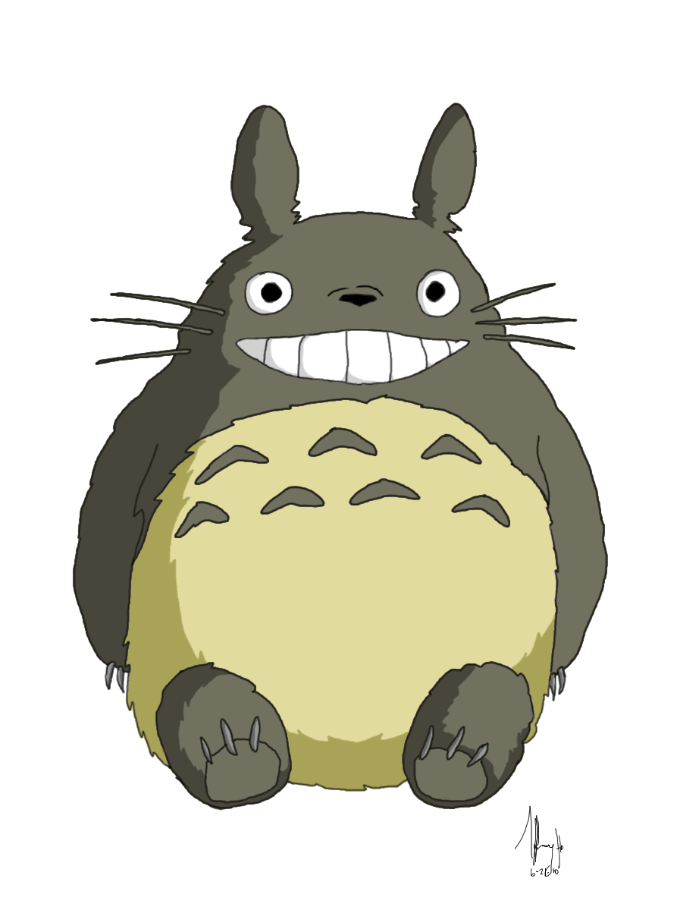
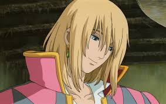
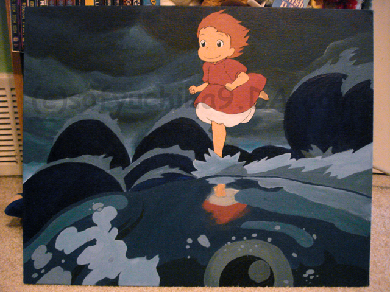
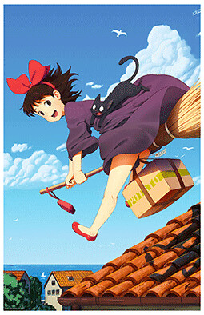
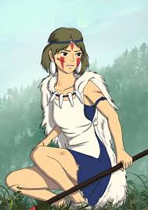
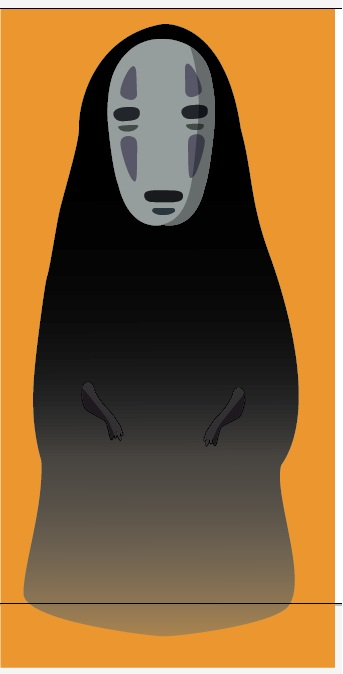

Totoro
Totoro from the movie My Neighbor Totoro is the mascot of Studio Ghibli.

Howl Jenkins Pendragon
Howl is the main character in the movie Howl's Moving Castle. He's a talented wizard known to steal the hearts of young girls.

Ponyo
Ponyo is the protagonist of the movie Ponyo. She's a goldfish born from a sea goddess mother and a human father.

Kiki
Kiki is the protagonist of Kiki's Delivery Service. She loves flying magic and set up her own witch delivery service with it.

Princess Mononoke
Princess Mononoke or otherwise known as San or The Wolf Girl is from the movie Princess Mononoke. She is princess of the Wolf Gods and was raised by wolves themselves.

No-Face
No-Face is the antagonist in the movie Spirited Away. He is known to react to different emotions and gain the personality and physical traits of other individuals by ingesting them.